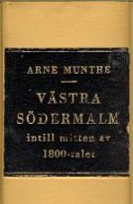
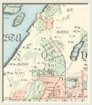
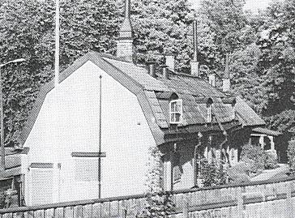
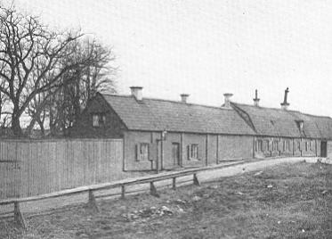

|
|
|

1959
|
|
Till det senare 1700-talets malmgårdar på västra Södermalm hör den stora egendom - numera till
största delen uppslukad av den moderna storstadsbebyggelsen och, såsom det förefaller, också
utplånad i det historiska medvetandet - som fick sina konturer utformade av Carl Fredric Ekerman,
Stockholms ryktbare borgmästare under den gustavianska tiden.
Ursprunget till egendomen var det tomtområde söder och sydväst om Fatburssjön, på båda sidor
församlingsgränsen mellan Maria och Katarina, som på Tillaei karta är betecknat som »Falkens
Egor».
Handelsmannen och bryggareåldermannen Johan Falck efterlämnade vid sin död år 1742 en
mycket betydande förmögenhet, uppskattad till 357.132 d.k.m. I kvarlåtenskapen ingingo icke
mindre än femton fastigheter i Stockholm, bland dessa ett stenhus vid Götgatan och
»Fatebursholmen med dess gårdar, bränneri och lador».
|
|
En av Falcks döttrar var gift med
magistratssekreteraren Samuel Ekerman i hans andra äktenskap. Även denne tycks ha varit en
man, som haft god hand med sin ekonomi, och som innehavare av en klädesfabrik tillhörde han
skaran av industriidkande ämbetsmän under manufakturpolitikens klang- och jubeltid. Av
svärfadern ärvde han bl.a. sjättedelen av dennes »gårdar, ägor och lador på Fatbursholmen och
vid Dantogatan».
|
|


|
Fastighetsintressena vid Fatburssjön gingo i arv till sonen Carl Fredric Ekerman, som så
småningom genom arvsförhållanden eller köp - återsamlade de splittrade ägorna till en
betydande domän. År 1770 innehade han två tomtområden i denna trakt, det ena om 43.883
kvadratalnar i kvarteret Krukomakaren med beteckningen Tanto n:is 51 och 52 och det andra
om 68.703 kvadratalnar i kvarteret Holländaren - alltså fallande inom Katarina församling -
med beteckningen nr 34.
|

|
|
I en supplik till magistraten samma år meddelade Ekerman, att han »väl redan begynt att göra någon
uppodling och förbättring» på dessa områden. Då han ämnade fortsätta »så väl medelst byggnad som
annor påkostnad», önskade han emellertid nu att köpa egendomarna till fria och egna. Vältaligt
utvecklade den tjugosjuårige magistratstjänstemannen inför sina höga förmän, vilka skäl, som talade
för ett bifall till han ansökan - en tidsbild från det lantliga Söder under senare hälften av 1700-talet:
»Och som jag ingalunda tvivlar, att ju Högvälborne Greven och Överståthållaren samt den Högädle
Magistraten med nöje anser, det tomterne i staden, ehuru avlägsne de ock måge vara, hellre förvandlas
till fruktbärande plantager, indelte i avsättningar, samt vackre trägårdar, försedde med byggnad, än
förbliva ohöfsade stenrösen och obrutne stenbackar, bebyggde med några snart förmultnade trästuvor,
hellre omgivne med stengårdar, häckar eller plank efter varje ställes belägenhet än görselstör och
staket ... »
|
Magistraten ställde sig icke heller avvisande. Friköpen beviljades, då staden icke ansågs
ha något intresse av dessa områden såsom varande »avlägsne, bergaktige och sterile».
Vid Ekermans död 1792 hade egendomen en betydligt vidgad omfattning. Hans ekonomi var
emellertid undergrävd: skulderna i boet, där den störste fordringsägaren var grosshandlaren G. F.
Diedrichsson, byggherren till Christinehofs malmgård, överstego tillgångarna, men
Söderegendomen räddades inom släkten. Från sonens, rådman Adolf Ludvig Ekerman, ägotid
ha vi en utförlig beskrivning av domänen tack vare en den 26 mars 1813 utförd värdering. Den
omfattade nu kvarteren Tanto större 51-53 samt Leuhusen och Fatbursholmen 34, 36 och 44-46.
Arealen av dessa områden, sammanlagda till en gemensam egendom, uppgick till hela 578.166
kvadratalnar.
|
Från Tantogatan ledde dubbla portar in till huvudgården. Mangårdsbyggnaden utgjordes
av två sammanbyggda brädpanelade hus på stenfot och under tegeltak. I nedre våningen lågo
kök och åtta rum med dels panelade och dels gipsade tak och porslinskakelugnar. I övre
våningen funnos fyra rum. Gården, avstängd från den angränsande trädgården genom ett
staket på hög stenmursfot, pryddes av åtskilliga lövträd. Den stora trädgården med omkring
100 fruktträd och 200 bärbuskar utnyttjades också för tobaks- och jordfruktsodling och
hade en stor tobakslada på stenfot. Vidare funnos två stall för respektive 6 och 4 hästar, ett
fårhus, ett fähus för 6 kor, 2 svinstior, ett drivhus med 10 fönster och tre timrade
drivbänkar. De stora områdena i kvarteren Leuhusen och Fatbursholmen utnyttjades
huvudsakligen till tobaksplantering, för vilket ändamål funnos flera tobakslador, mer eller
mindre i gott stånd. Av egendomens 47 tunnland voro icke mindre än 27 tunnland utlagda till
tobaksland.
|
|

|
Efter Adolf Ludvig Ekerman, som avled barnlös 1829, övergick egendomen till hans
broder, grosshandlaren Carl Johan Ekerman, för att sedan gå ur släkten 1856, då den inköptes
av kapten Bengt Gartz. Mangårdsbyggnaden fick stå kvar, då trädgårdar och tobaksland så
småningom togos i anspråk för den växande stadsbebyggelsen.
Som bekant gjorde Carl Fredric Ekerman som forskare och samlare också en insats för att klarlägga
sin stads äldre historia. En del av hans Stockholmspapper påträffades år 1908 på vinden till hans
gamla malmgård på Södermalm. Byggnaden står fortfarande kvar på sin gamla plats, numera Sköldgatan 9-11, en bortglömd relikt, berövad hela sin ursprungliga miljö. Från 1813 års beskrivning
igenkänner man utan svårighet dubbelportarna, som från gatan, dåvarande Tantogatan, ledde in till
huvudgården, och mangårdsbyggnaden med sina två sammanbyggda brädpanelade hus. Säkerligen
härstamma de från Carl Fredric Ekermans tid: vid 1813 års värdering konstaterades, att de voro i gott stånd och väl underhållna, fastän byggda »för längre tid tillbaka».
|
|